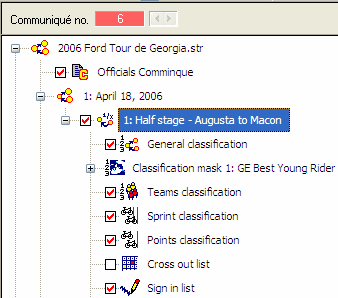
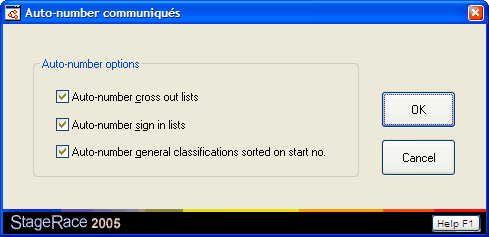

Communiqué numbering is the process of assigning ordinal numbers to all publications of an event, as required by the UCI (2.2.090 and 2.2.091).
Communiqué numbering must be switched on in the Publication section of the settings dialog.
Publications can be published in two steps:
Note the distinct difference between publishing and generating.
If a document is not yet effectively published as described above, the communiqué number will be omitted entirely during generating.
On published documents, the communiqué number will be printed, the next time it is generated.
The table of contents for an event will also display the communiqué numbers. When communiqué numbering is activated, the table of contents will only list those publications that are actually effectively published, so that you can let an online table of contents grow during the event.
The communiqué number bar is displayed at the top of the event tree.

It shows the number that is currently assigned to a publication.
The color used for displaying the number is indicative for the usage of the number's value; namely:
When communiqué numbering is switched off, the communiqué number bar is hidden.
Use the Auto-number communiqués dialog to automatically number all the communiqués that are not currently published. You can find the Auto-number communiqués dialog through in the menu.

In the Auto-number communiqués dialog you can choose if you want to include certain types of publications that are not always required to have communiqué numbers, namely: cross out lists, sign in lists, general classifications sorted on start no.
|
|
Why can StageRace not number publications automatically? The way as it is, it is possible to insert external publications. For instance very exceptional classifications or informative race reports can be foreseen with a communiqué number that nevertheless fits into StageRace's communiqué numbering nicely. |